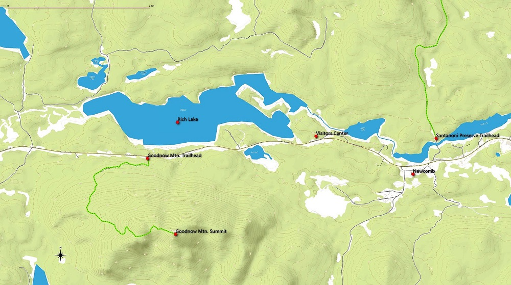

Goodnow Mountain is all about the view. From the fire tower many of the High Peaks feel close at hand.
| Directions | From the Long Lake head towards Newcomb on Route 28N. It's eleven miles to the well marked parking area on the right. If by chance you see the entrance for the ESF Visitors/Interpretive Center on the left, you've gone too far. |
| Difficulty | Moderate-easy. 4.2 mile round trip with an elevation gain of 1000 feet. The trail climbs gradually, but steadily. |
| Family-Friendly | Yes. This is a family and dog friendly route. |
| Winter | Goodnow is a popular route in winter. Snowshoes and or micro-spikes might be needed depending on conditions. |
| One Thing to Know | The Goodnow tower stands 60 feet tall. That might not mean much without a frame of reference, but, when you see it, you might realize that tower is taller than many others in the Adirondacks (the tower on Owls Head is 35 feet tall for comparison). The height means that the stairs on this tower are steeper that normal. Take my word for it, you'll want to hang on to the railings. |
| ESF Website | ESF Huntington Forest Website |
| Photo Gallery | Goodnow Mountain Photo Gallery |
It's a 2.1 mile walk to the tower with about 1000 feet of elevation to gain. That's probably long enough to move this hike out of the "easy" category, but just barely. Given that, with the great views, makes the Goodnow summit a popular destination.
Goodnow Mountain Trail Map
You can't actually get into the cab (the enclosed capsule at the top of a fire tower), because there is no floor (March 2020). But you can climb up the steps as far as you want and each higher platform brings an expanding view. And that view is spectacular. To the north, Rich Lake lies in the foreground with the tallest mountains in New York State spread out in front of you. There are views in all directions from the tower, but it's really the high peaks that people want to see.
High peaks from Goodnow
Goodnow mountain, and the surrounding lands, are part of the Huntington Forest, a 15,000 acre research forest managed by the SUNY College of Environmental Science and Forestry. In addition to the Goodnow Mountain trail, the Forest hosts a visitors center; the entrance to which is located a mile closer to Newcomb on Route 28N. If you are not up for the Goodnow hike, the visitors center is the starting point for several miles of very nice trails that weave among the lakes east of Newcomb. The Visitor Center trails are well worth a visit.